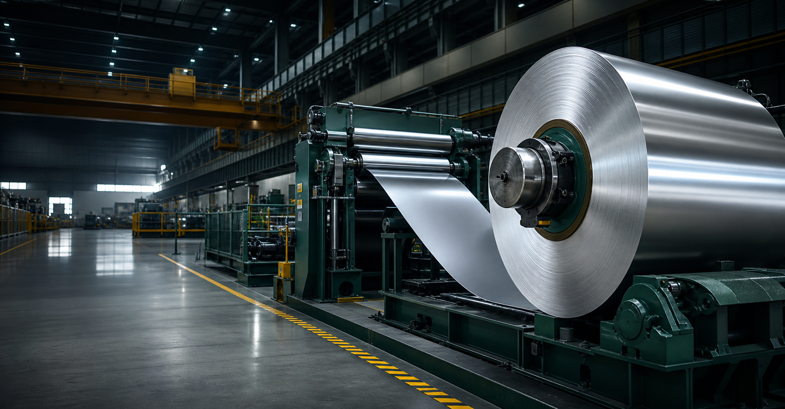
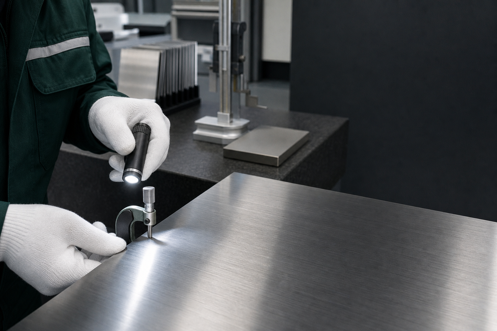
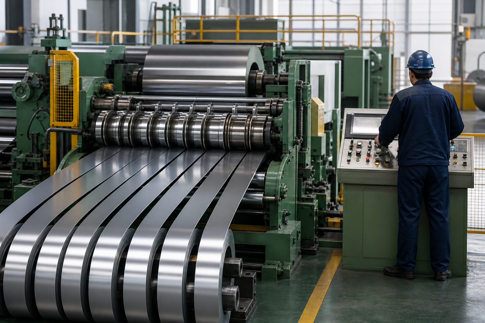
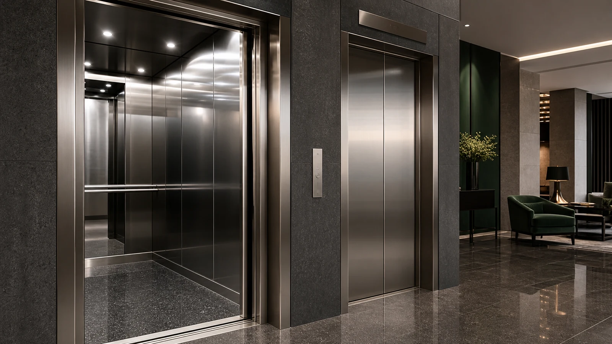
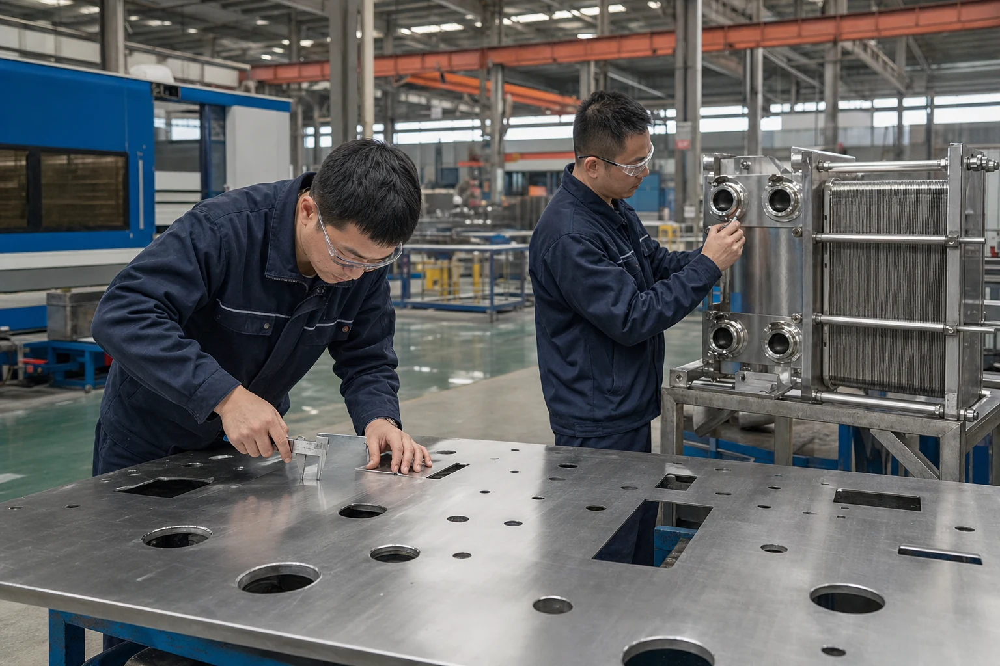
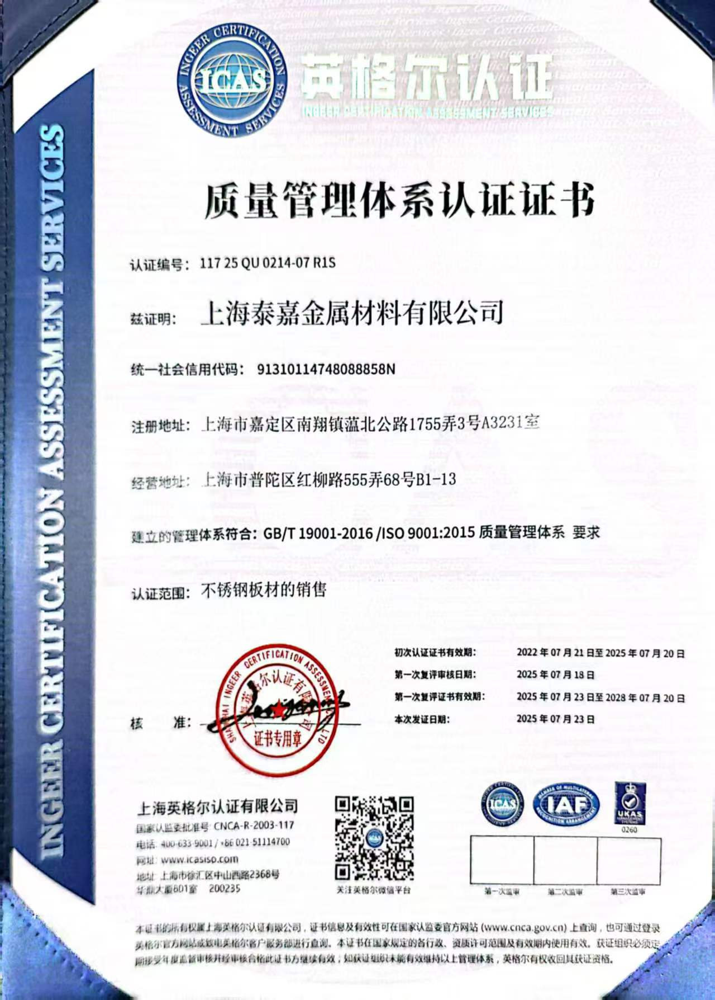
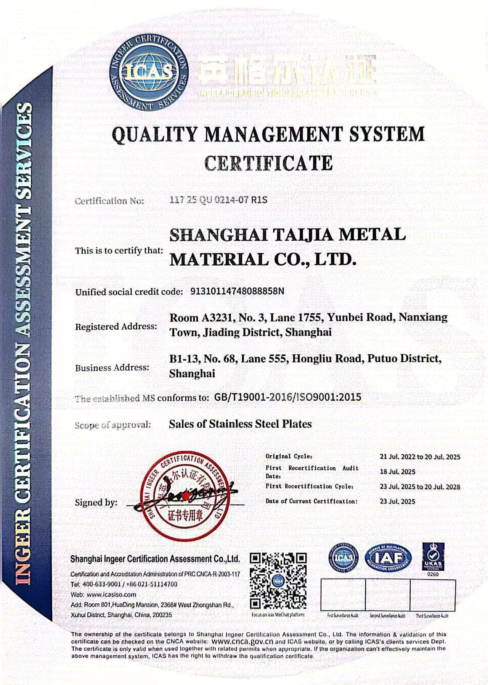

材料供应
覆盖主流不锈钢牌号、规格与表面状态，支持灵活采购。

STAINLESS STEEL SOLUTIONS
专业不锈钢板材、卷材与定制加工服务。以稳定供应、严格品控和快速响应，为客户构建可靠的材料供应链。
关于泰嘉
上海泰嘉金属材料有限公司立足上海，专注于不锈钢材料的销售、代理与配套加工。依托上海及周边完善的钢材流通、仓储和物流网络，我们服务于家电厨具、汽车零部件、建筑装饰、医疗器械、食品设备及化工装备等领域。
我们坚持“以诚为先、以信待客”，以优质材料、合理价格和专业服务为标准，围绕牌号、规格、表面、加工与交期，为客户提供清晰、可执行的材料方案。
覆盖主流不锈钢牌号、规格与表面状态，支持灵活采购。
开平、分条、切割、磨砂与贴膜，匹配后续制造工序。
关注材质证明、尺寸、表面及包装，建立订单质量记录。
协调仓储与物流资源，提高响应速度和交付稳定性。
材料与产品
从卷材、板材到精密分条和表面处理，我们根据客户用途匹配牌号、机械性能、表面状态和加工方式。
S.S. COIL · 2B / BA / NO.1

02SHEET & PLATE · CUSTOM SIZE

03SLIT COIL · CUSTOM WIDTH

04NO.4 / HL / MIRROR / FILM
具有良好的耐腐蚀性、耐热性、低温强度与机械性能。304L 低碳钢适用于对耐晶间腐蚀有更高要求的应用。
通过添加钼，提高耐点蚀、耐腐蚀和高温强度。316L 低碳钢具备更优秀的耐晶间腐蚀能力。
钛稳定化铁素体不锈钢，焊接性与加工成型性优良，适合热循环与耐热结构件。
热膨胀率低，成型性和耐氧化性能良好，兼具美观、实用与经济性。
产品中心
专业采购不只是询问“304多少钱”。产品形态、牌号体系、表面、尺寸公差、边部、保护膜、包装和文件要求需要在报价前共同确认。
适合连续冲压、成型、制管及开平加工。可围绕母卷或分条卷组织采购，并根据下游设备确认卷重、内外径、边部和包装。
用于冲压、折弯、激光切割、厨具和装饰面板等制造环节。可视面项目应提前确认纹路方向、色差限度和保护膜。

应用场景示意面向设备、容器、换热与工程结构的平板材料，热轧 No.1 是常见交付表面。牌号、标准、尺寸与检验文件应按具体工程订单确认。
由宽幅卷材分切至指定宽度，适合连续冲压、汽车零部件和精密制造。订单重点从“宽度”进一步延伸到毛刺、镰刀弯、卷形和边部状态。
表面代号描述的是加工路径与外观类别。装饰项目仍应在订单中确认实物限度样板、纹路方向、粗糙度或光泽要求。
热轧后退火并除鳞形成的粗糙、无光表面，常见于工业板材与后续加工。
通用冷轧表面，通常经退火、酸洗和轻度平整，兼顾平滑度与后续加工适应性。
在保护气氛中光亮退火形成，比 2B 更光滑、更明亮，适用于对反射和外观有要求的产品。
通用磨砂/抛光表面，形成均匀可见的细纹，常用于厨房设备、家电和建筑装饰。
具有连续长直纹路的装饰表面。订单需明确纹路方向、色差限度、样板和保护膜。
通过多阶段精细抛光获得高反射表面。镜面等级、可接受缺陷和最终保护方式应以订单样板确认。
在适用且经报价确认的前提下，可按客户指定的 ASTM/ASME 或 EN 牌号与交货标准组织订单和文件。最终符合性取决于订购标准、产品形态、生产钢厂文件及订单专项技术确认。
选择下列项目，系统会生成一段可复制或直接带入询价表单的英文规格摘要。
技术参考基础：ASTM A240/A240M、EN 10088-2、World Stainless 表面处理资料及钢厂公开牌号资料。采购标准、最新版次和 MTC 文件以订单确认内容为准。
材料工程参考
专业选材需要同时考虑腐蚀介质、温度、成型、焊接、表面、清洁方式与成本。下表用于询价前的初步沟通，最终材料规范应以适用标准、客户图纸和订单技术确认为准。
同一牌号采用不同表面状态时，其外观、清洁、后续加工和保护方式都会不同。
表面较粗糙、无光泽，常用于对装饰性要求不高的工业结构和厚板应用。
经退火、酸洗和轻度平整，表面平滑，是常见的通用冷轧交付状态。
在保护气氛中光亮退火，通常比2B更平滑、更明亮，适合外观与后续抛光需求。
通过磨料形成均匀纹路，常用于设备外观、厨具和建筑装饰；需确认纹路方向与样板。
具有连续、方向一致的线性纹理，适用于电梯、室内装饰和可视面板。
通过逐级精细抛光和抛光膏处理形成高反射表面，验收通常需要样板和观察条件。
材料选型与表面描述用于前期沟通，不替代标准原文、工程计算、腐蚀评估或客户批准的技术规范。
选择一个典型环境，查看初步候选牌号与需要进一步确认的技术条件。结果仅用于询价准备。
适用于需要综合考虑耐腐蚀、成型、焊接和清洁性能的一般工业与食品、家电应用。
含钼奥氏体牌号通常用于存在氯化物、潮湿、沿海或化工介质的项目，但仍需进行具体腐蚀评估。
钛稳定化铁素体材料可作为汽车排气和耐热结构件的候选方向，需结合温度循环、冷凝与焊接条件确认。
430或304可作为家电面板、厨具和室内装饰的候选，最终选择取决于环境、成型、焊接与表面一致性。
将宽幅卷材纵向分切为指定宽度的窄带卷，关注毛刺、宽度公差、边部质量与收卷整齐度。
对卷材进行矫平和定尺剪切，形成满足下游冲压、激光切割及结构制造的平板材料。
根据装饰与功能需求提供磨砂、拉丝等表面处理，形成均匀、连续的纹理效果。
按成型、折弯、运输与存储场景匹配保护膜及包装方式，降低表面划伤和污染风险。
产品应用
不同环境对耐腐蚀、强度、成型、焊接和表面效果有不同要求。我们协助客户从使用场景出发选择材料。
面向清洁性、耐用性与重复加工需求，提供适用于水槽、操作台、厨具和食品设备的材料与表面路径。
行业解决思路
以下内容不是固定方案，而是采购、工程和生产团队在询价阶段需要共同确认的技术路径。
质量与追溯
质量不只是材料牌号。我们关注从资料确认、加工过程到包装交付的关键节点，使每批材料具备更清晰的质量依据。
企业资质
上海泰嘉金属材料有限公司质量管理体系认证范围为不锈钢板材销售。现行认证周期自 2025 年 7 月 23 日至 2028 年 7 月 20 日。


服务支持
确认牌号、规格、表面、数量、用途与交期。
根据应用提供材料建议与清晰报价。
按确认要求组织加工、检查与包装。
协调运输，跟踪订单并完成交付。
对质量与使用问题及时沟通和处理。
国际采购支持
我们围绕材料标准、技术资料、包装方式和贸易条款组织订单信息，帮助海外客户在报价前明确关键要求。具体文件、包装和贸易条款以订单确认为准。
根据用途核对 ASTM、EN、JIS 与 GB 等常用标准体系，确认牌号、尺寸、公差和表面状态。
在订单确认阶段明确所需资料，并将文件要求纳入报价与交付清单。
根据卷材或板材形态、表面保护、运输方式与目的港要求，确认托盘、护角、防潮和标识方案。
报价中明确交货地点、运输责任、预计周期与装运资料，便于采购团队进行到岸成本评估。
海外采购常见问题
清晰的询价可以减少反复确认、缩短技术评审时间，并让报价、生产和交付依据保持一致。
建议提供材料牌号与标准、厚度及公差、宽度、长度、数量、表面、边部、保护膜、加工、包装、目的地和期望交期。若有图纸、样板或终端用途说明，也请一并提供。
可以在询价阶段核对常用标准与对应牌号，但不同标准并非在所有项目上完全等同。最终应在报价与订单中明确标准版本、牌号、尺寸、公差、表面及检验要求。
可根据材料来源、牌号和订单要求确认材质证明、炉批资料、尺寸或表面检查记录等文件。文件类型和内容需在下单前写入订单确认清单。
分条、开平、表面和包装能力需要结合材质、厚度、宽度、硬度、卷重和设备路线进行技术评审。我们不会用一个通用数字覆盖所有订单，最终范围以书面技术确认为准。
最低订购量与交期取决于库存、钢厂来源、特殊规格、加工路线、包装和运输方式。收到完整询价后，我们会在正式报价中提供订单对应的信息。
包装需结合卷材或板材形态、表面等级、保护膜、运输方式、装卸条件和目的地要求确认。可在订单中明确托盘、护角、防潮、固定、标签及唛头要求。
样品、色板或表面限度样板需根据材料和表面库存确认。对装饰面、磨砂纹路和颜色一致性要求较高的项目，建议在批量订单前先确认样板及观察条件。
请保留外包装、标签、炉批或卷号、装箱单，并在开包和检验时拍摄清晰照片。尽快提供问题位置、数量、测量方法和使用状态，有助于双方高效核对订单记录。
联系我们
请提供牌号、厚度、宽度、长度、数量、表面和加工要求，我们将据此沟通方案。